← 返回阅读库 · 原论文目录
论文讲解阅读文档 · 多模态语言模型 · v035
Align before Fuse: Vision and Language Representation Learning with Momentum Distillation
视频时长 00:13:15；讲解文字 6,678 字符；提取讲解画面 42 张。按视频原顺序阅读，每段文字保留时间戳。
文字来自整段视频的自动语音转写，按自然停顿分段，并与 PPT / 论文页面 / 演示画面对齐。未将讲解压缩为摘要；术语、数字和口述公式请结合画面及原论文核对。 阅读稿已校正规范部分明确术语误识别；原始逐字稿和每处修改记录另行保留。
讲解画面为源视频截图（640×360），不是可编辑 PPT 文件。全片按每秒 2 帧扫描内容变化，逐步展开页保留；连续动画保留代表画面。清晰度受源视频限制。
下载完整资料包 · 含离线 HTML、PDF、Word、全部 PPT 画面和字幕。
原论文与材料
Align before Fuse: Vision and Language Representation Learning with Momentum Distillation · 下载完整 PDF（16 页）
按时间阅读
00:00:00–00:00:15 · 画面 001
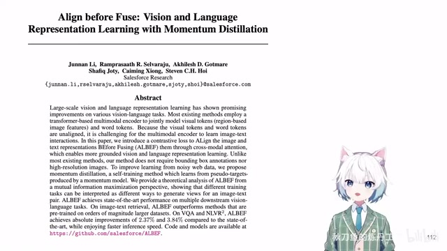
00:00:00–00:00:15 · 画面 001大家好啊今天我们来快速梳理一篇论文Align Before Fuse Vision and language representation learning with momentum distillation这篇呢就是 ALBEF它是我们后面的 BLIP BLIP-2 还有 MiniGPT 这样的文章的基础你看到这篇的本质呢
00:00:15–00:00:54 · 画面 002
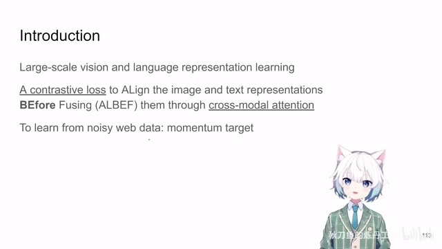
00:00:15–00:00:54 · 画面 002它就是学一个大规模的 Vision language representation那更确切的说呢它有一个 Cross-attention 的 module Cross 的呢是 Text embedding 和这个 Image embedding它们做 Cross-attention把信息融合起来但是呢在融合之前就像这个标题所说的一样它加了一个 Contrastive loss用一个对比学习的手段先把 Image embedding 和 Text embedding它们共同投影到一个 Latent space 里面
这样子呢在做这个 Cross-attention 的时候呢更加顺利同时呢为了应对网上的大量的 Noisy 的数据那么作者呢还维护了一套 Momentum network用这个 Momentum network 做一些 Target 出来这个放在当时 21 年呢是一个非常流行的做法下面呢我们直接来看作者的设计
00:00:54–00:01:04 · 画面 003
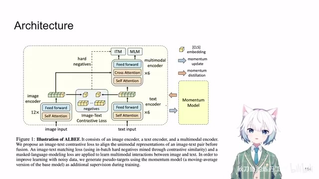
00:00:54–00:01:04 · 画面 003那本文整个的结构呢就像图里展示的一样它是非常直立的直接的你的 Image 和这个文本进来之后呢各自进各自的 Encoder Image 呢这里是一个 12 层的 VIT Base
00:01:04–00:01:32 · 画面 004
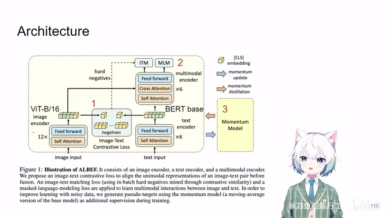
00:01:04–00:01:32 · 画面 004分出 Patch 来然后其中里面有这个 Classification Token那这个 Text 呢它是放到一个 Bert Base 这样一个 Model 里面但是这个 Bert 呢被从中间劈开了我们前六层单纯的作为这个 Text Encoder那后面六层呢我们引入这个 Cross-attention把视觉的信息呢加入到文本当中那么最后呢希望学出一些包含 Text 和 Image这些所有信息的这样一系列的 Token这个呢是本文的一个大的框架
00:01:32–00:01:33 · 画面 005
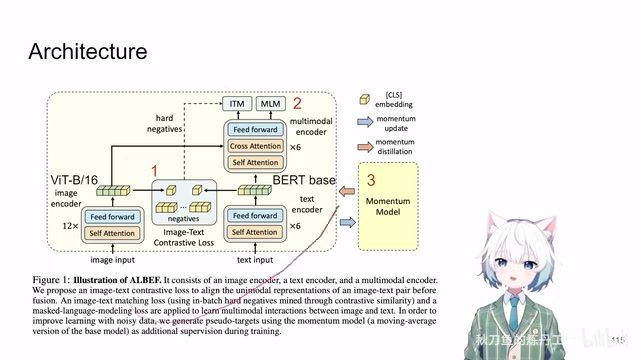
00:01:32–00:01:33 · 画面 00500:01:33–00:01:43 · 画面 006
00:01:33–00:01:43 · 画面 006那顺着这个框架来展开我们观察到 Align Before Fuse对吧最显眼的就是在我们真正做 Cross-attention 之前真正把这个 Text 和 Image 两个模态融合起来之前
00:01:43–00:01:44 · 画面 007
00:01:43–00:01:44 · 画面 00700:01:44–00:02:27 · 画面 008
00:01:44–00:02:27 · 画面 008它用了一个 Contrastive Learning加了一个 Contrastive Loss来帮助我们把这两个模态的 Embedding投影到一个共同的空间里面这是第一点那么第二点呢就是它们在融合起来之后加了各种 Loss那么第三个呢也是作者提的这个 Momentum Model Momentum 就是 Exponential Moving Average就是你训练好了一个在线的模型跟你原来这个 Momentum 的模型按照一定权重把参数融合起来通过这样的方式来更新这个 Momentum Model
而你根据这些 Loss 计算出来的这个梯度下降呢只用于更新这个在线模型那这些呢都是很标准的操作下面呢我们就具体来看它这个 Contrastive Loss 是怎么设计的然后包括上面这两个 Loss 是什么然后呢这个 Momentum Model 是怎么用这三个步骤
00:02:27–00:02:34 · 画面 009
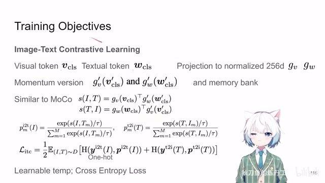
00:02:27–00:02:34 · 画面 009那首先呢这里我们先看 loss那根据刚刚的图loss 呢包含三个部分我们首先来看这个 contrastive learning也就是这个部分里面的东西
00:02:34–00:02:36 · 画面 010
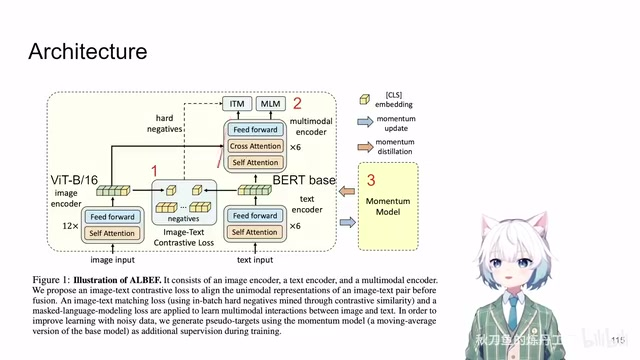
00:02:34–00:02:36 · 画面 01000:02:36–00:03:02 · 画面 011
00:02:36–00:03:02 · 画面 011那这里呢我们这个图片进到 vit 里面我们拿到它的 classification token文本拿到这个 bert encoder 里面也是我们拿到它的 classification token那一个标准的像 moco 也好各种各样的 self-supervised learning 方法也好你对于 encoder 出来的原始的 token你要拿一个 linear layer这里呢作为把它投影到一个 256 长度的这样一个 vector同时呢做一个 normalization
这就是两个投影层啊然后呢我们参考 moco
00:03:02–00:03:03 · 画面 012
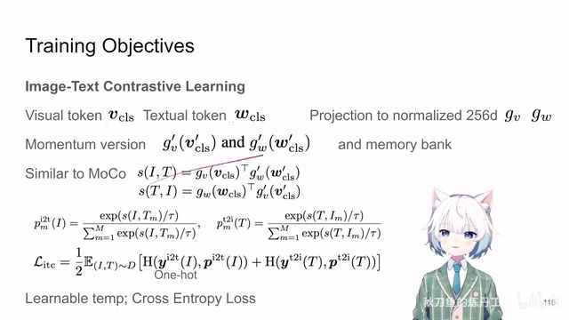
00:03:02–00:03:03 · 画面 01200:03:03–00:03:38 · 画面 013
00:03:03–00:03:38 · 画面 013我们知道文本和图片匹配的样本它们的相似度我们就希望它高那这个相似度怎么表示呢就是投影后的这个 vector它们之间的 cos similarity那因为它们是 normalized 的所以这个 cos similarity 呢也等效于 mse然后呢一个经典的对比学习的套路匹配的文本和图片它们的相似度应该高相对于这个图片和其他不匹配的文本的相似度对吧这是图片到文字那同样的这一个文字对于匹配的图片它的相似度要高对于其他的图片它的相似度也要低这是从文本到图片
00:03:38–00:03:39 · 画面 014
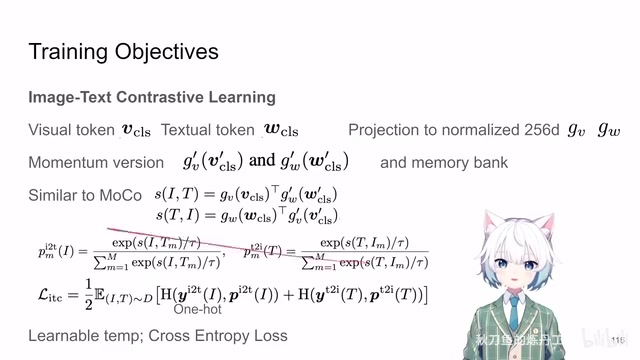
00:03:38–00:03:39 · 画面 01400:03:39–00:03:47 · 画面 015
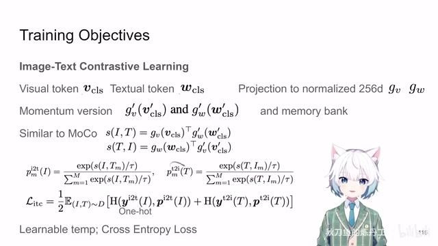
00:03:39–00:03:47 · 画面 015那这两个部分那么最后总的 loss 呢就是这两个 loss 的一个平均值实现起来呢就是两个 cross entropy loss那么当然跟 moco 一样
00:03:47–00:04:46 · 画面 016
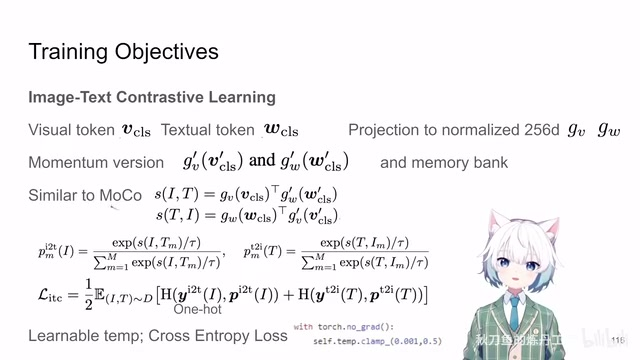
00:03:47–00:04:46 · 画面 016你真正算 similarity 的时候一个 representation 是来自于你的在线的网络另一个 representation 是来自于你的 momentum network而梯度呢是来自于你的在线网络传递那么注意呢这里有两个细节一个就是你的 similarity 算出来之后真正算这个 cross entropy 之前还要用一个 temperature 来处理一下这个 temperature 呢这里是一个 learnable然后呢它的这个变化的范围这里呢作者还限制了它的变化的范围
这是第一个细节第二个细节呢还是在那个年代呢我们是有这个 memory bank 的也就是说这些 momentum encoder提取出来这些 feature也就是这些带 prime 的这些 feature存到一个大的这个 memory bank 里面这就是一个大的序列那么你新的一个 batch 到来之后呢你的这些负样本不只来自于这个 batch 中不匹配的其他的样本还包括你的这个 memory bank就是说你有更多的负样本来加入到这个 contrastive learning 里面
那么这个是两个设计
00:04:46–00:04:47 · 画面 017
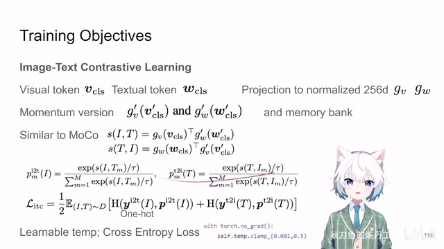
00:04:46–00:04:47 · 画面 01700:04:47–00:04:57 · 画面 018
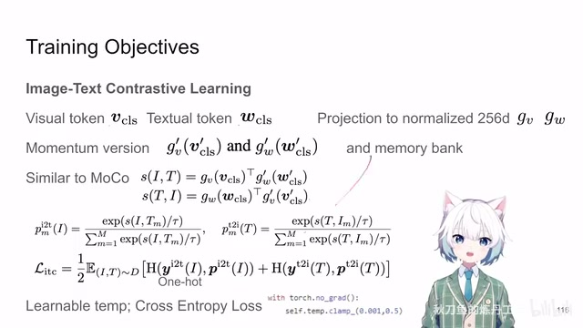
00:04:47–00:04:57 · 画面 018那么当然从现在的角度来看呢momentum 和这个 memory bank 都不是必须的了那么这个部分呢就是 contrastive learning最基本的一个配置那么再往下呢
00:04:57–00:05:31 · 画面 019
00:04:57–00:05:31 · 画面 019就是我们使用 crossattention把这些 feature 都融合起来你看到这里它有六层每一层都有 crossattention 都去做融合这是第一点然后第二点就是 crossattention 是把这些所有的 token 包括 patch classification token 这样的东西都放进去里面做 crossattention 而这个 contrastive loss 只是根据 classification token 来的然后 crossattention 之后出来整个这一个序列它对应的就是原来的文本输入的这一段序列那么在这个上面我们要加哪些 loss 呢
我们来看到那这里呢作者加的第一个 loss 是这个 image text matching 这样一个 loss 他呢非常简单就是一个有两个分类的这样的一个 classifier 本质上呢就是你最后输出的那一串 token 他的第一个 token classification token 因为他使用的是 bert 的这个模型嘛所以他第一个 token 是 classification token 把这个 token 拿出来放到一个连接层来判断我输入的这个图像文本
00:05:31–00:06:37 · 画面 020
00:05:31–00:06:37 · 画面 020是不是匹配那一个分类器怎么训练还是一个 cross entropy loss 这是这个 loss 但是呢在具体训练的时候其实它是有一定技巧的首先说我用什么样的数据去训练这个 classifier 呢首先我必须包括这种 positive 样本也就是说图像和文本匹配的这样的样本那这个是确定了没有变数的但是我们同样需要这种 negative sample 这种图像和文本不匹配的这种对我们应该怎么取得呢这里呢作者用了这个 hard negative sampling 它的意思呢就是我专挑那些图像文本看起来很相似但是其实它们不匹配的这样的样本 hard negative 嘛用这些样本去训练这个 classifier
那在这个思路的指导下呢我们来看到作者的实现呢就是他首先拿到了我们之前的根据这个 contrastive learning
00:06:37–00:06:43 · 画面 021
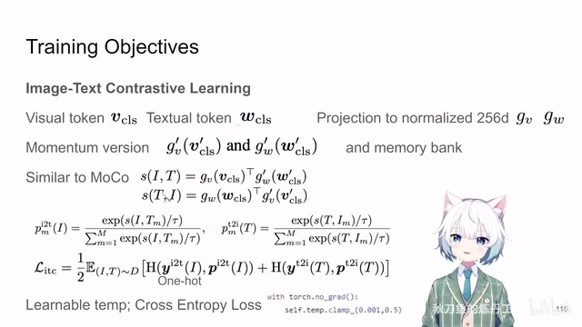
00:06:37–00:06:43 · 画面 021根据两个 embedding 的 cosine similarity计算出来的图像文本的相似度这样的一个矩阵
00:06:43–00:07:54 · 画面 022
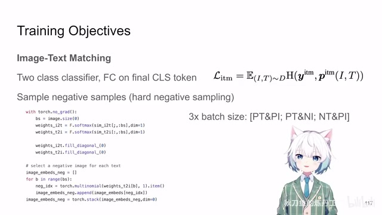
00:06:43–00:07:54 · 画面 022在最理想的情况下应该是对角线上匹配的文本和图片它们的相似度是最高的然后呢其他位置上的文本和图片也各有各的相似度嘛那这里呢作者做的操作就是把你对角线上真正匹配的这一串样本把它的相似度给它抹成零那这样子呢剩下的样本我们知道首先它们都是不匹配的而这个时候如果它们的相似度越高说明这一对样本对我们的模型是具有挑战的是困难的那我们呢就根据这个相似度我用它呢来作为我们的抽卡的概率这两个不该相似的样本它们越相似我就有越高的概率去抽到它抽到这个样本呢作为 negative sample帮助我们的 classifier 去训练
而实际上呢针对一个 batch 的图像和文本你组合的方式呢其实有三种第一个就是我们最开始说的正确的图像和正确的文本它们组合起来这个是 positive sample然后正确的文本随机在这个 batch 里面抽错误的图像这样的匹配它们是不该匹配的这个是一个 batch 的这个 negative sample同样的错误的文本配上正确的图片也是一个 batch 的 negative sample 这样子呢，3 倍的 batch size 的这个数据送到我们的这个 classifier 里面去训练，那这个呢就是 image text matching 这一部分
00:07:54–00:07:55 · 画面 023
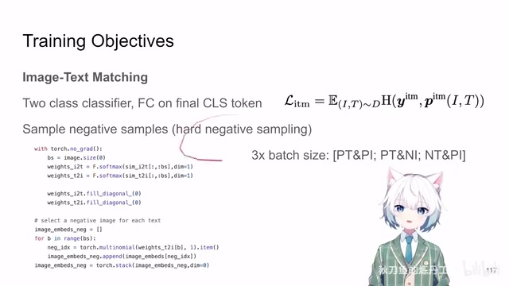
00:07:54–00:07:55 · 画面 02300:07:55–00:07:58 · 画面 024
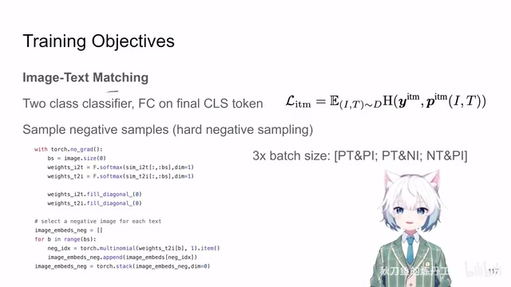
00:07:55–00:07:58 · 画面 024那最后一个 loss 呢是这个 mask language modeling 它呢相对于之前的两个 loss 就比较独立了你这里呢它用的方法跟 bert 一样就是我的一个序列里面有 15%的 token 我拿出来做处理然后这 15%的 token 当中有 10%我随机给它替换成其他的 token 有 80%替换成一个 mask token 专门的一个 mask token 那剩下的 10%呢就不变然后呢你把这个 mask 过的这个序列送到你的模型里面再结合上这个图片
00:07:58–00:08:35 · 画面 025
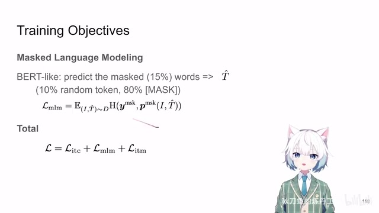
00:07:58–00:08:35 · 画面 025整个流程走一遍最后顺顺的这个序列呢你希望这 15%的被 mask 掉的 token 他们预测的结果是正确的那这个呢也是一个很直接的 cross entropy loss 写出来呢就是这个样子那么最终呢全文的三个 loss 啊直接加起来就好了这个呢就是本文做训练的最直接的三个 loss 那回看这个图一个是跟 moco 一样的 contrastive loss 一个是跟 bert 一样的这种
00:08:35–00:08:36 · 画面 026
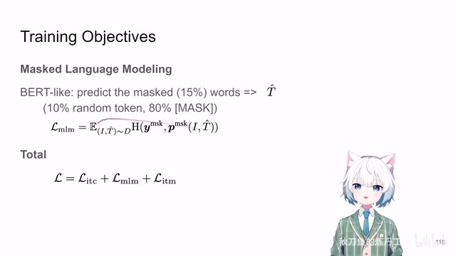
00:08:35–00:08:36 · 画面 02600:08:36–00:08:37 · 画面 027
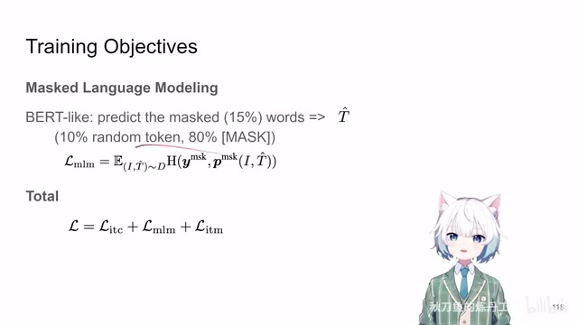
00:08:36–00:08:37 · 画面 02700:08:37–00:08:41 · 画面 028
00:08:37–00:08:41 · 画面 02800:08:41–00:08:45 · 画面 029
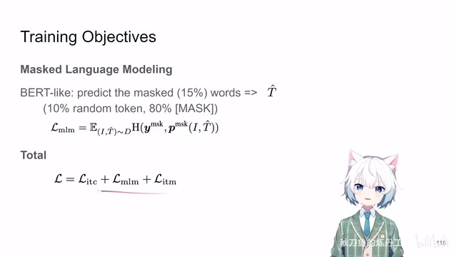
00:08:41–00:08:45 · 画面 02900:08:45–00:08:55 · 画面 030
00:08:45–00:08:55 · 画面 030Mask Token Prediction Loss 那最后呢一个 Classification Loss 三个 Loss 那再往下呢作者介绍这个 Momentum Distillation 就是我们既然维护了一个 Momentum Network 我们不仅在 Moco 里面要用它我们还让它发挥一点其他的作用对吧那具体怎么发挥呢一个蒸馏对吧我希望我的 Online Model 的输出跟我的这个 Momentum Model 的输出是相似的那么怎么样让两个模型的输出的 Distribution 相似那就是一个 KL Divergence 那这里呢
00:08:55–00:08:56 · 画面 031
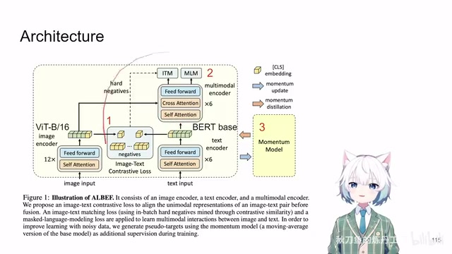
00:08:55–00:08:56 · 画面 03100:08:56–00:10:14 · 画面 032
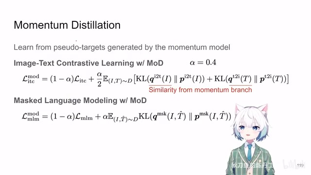
00:08:56–00:10:14 · 画面 032你就把同样的图像和文本送到你的这个 momentum encoder 里面啊你的 momentum encoder 输出一个最终的结果然后呢你就算你的 momentum 出来的 distribution 跟你的 online model 出来的 distribution 啊他们的 kl divergence 就好了整个这一串算出来 loss 跟你正经训练的这个他们加权融合一下这里呢作者选的 alpha 等于 0.4这个就是新的带 momentum distillation 的
这样的一个 contrastive learning 的 loss那么当然你在做masked token prediction 的时候也是可以做蒸馏的对吧一样的道理也是以 momentum 出来的 distribution跟你 online model 出来的 distribution它们应该相似还是 kl divergence加权融合起来这是你的这个 mlm这个 loss加上这个 momentum distillation那么到这里呢其实整个文章的最核心的技术的部分已经梳理结束了
你就可以直接拿它来做实验了但是呢
00:10:14–00:10:28 · 画面 033
00:10:14–00:10:28 · 画面 033这里作者还安排了一个章节就是他想讨论一下本文的这些一整个 loss跟这个 mutual information这个关系那因为 MoCo 这个东西它使用的 loss 呢跟这个 InfoNCE这个 loss 是非常像的而在之前的这个 CPC
00:10:28–00:10:29 · 画面 034
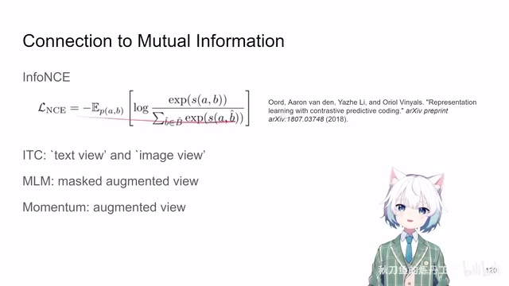
00:10:28–00:10:29 · 画面 03400:10:29–00:10:38 · 画面 035
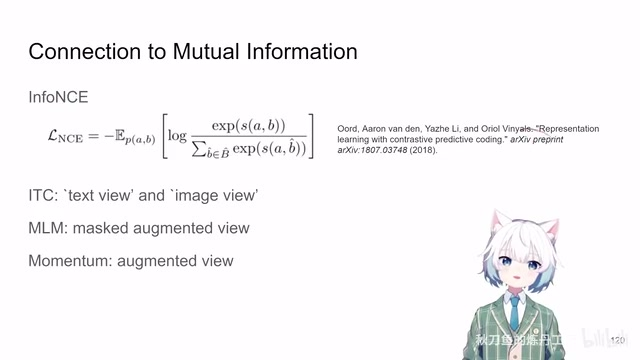
00:10:29–00:10:38 · 画面 035这篇文章里面呢提 InfoNCE 的这篇文章里面呢他就说过这个 InfoNCE 呢是能够提高mutual information 的下界
00:10:38–00:10:39 · 画面 036
00:10:38–00:10:39 · 画面 036当然这篇里面也是做了很多分析我不敢说完全明白所以还是推荐你直接去看这篇文章的原文总之作者在这里想要强调的是我们以一个图像里面 contrastive learning 的视角一张图加两个 augmentation 变成两个 view 然后我们希望这两个 view 它的语义是相似它们 embedding 是相似按照这个逻辑来走的话 text 和 image 可以分别看成同一种信息的两个 view 我们希望它相似
00:10:39–00:10:43 · 画面 037
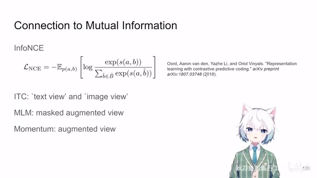
00:10:39–00:10:43 · 画面 03700:10:43–00:10:44 · 画面 038
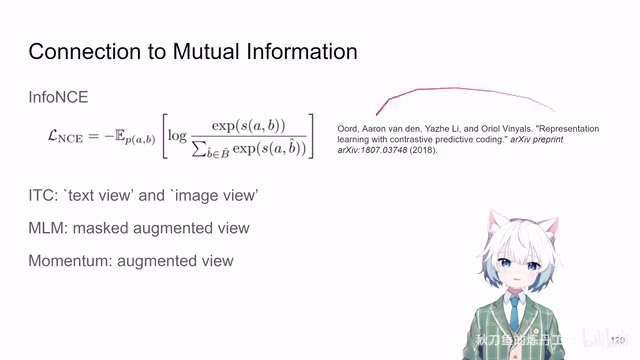
00:10:43–00:10:44 · 画面 03800:10:44–00:11:31 · 画面 039
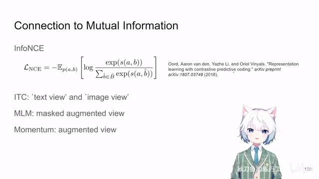
00:10:44–00:11:31 · 画面 039然后 bert 那样的 loss 你 mask 过的信息跟你原始的信息我们希望它相似所以 mask 可以被视为一种 augmentation 的手段最后 momentum encodermomentum target 你也可以把它理解成为一种 augmented view 也是一种 augmentation 的手段所以作者说它也能够帮助 mutual information 我也不好说的是完全同意作者的观点总之这是他的 argument 我们放到这里供你参考好了那么然后我们就可以看到实验部分了那么这篇文章的实验部分做的种类还是非常多样的你对比现在的某些文章来看一看还是当年做的工作东西要扎实一点那这里呢有五个主要的任务包括 image text retrieval 拿出一个 image 找 text 拿出一个 text 找 image 这其实是两个任务然后呢这个 entailment 就是你的图像文本的匹配程度它是一个三分类问题非常匹配
00:11:31–00:12:38 · 画面 040
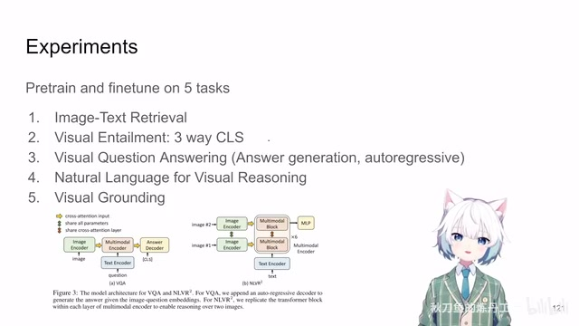
00:11:31–00:12:38 · 画面 040没啥关系不匹配是这样的一个任务。然后呢是这个 VQA 给张图片给个问题来去生成这个答案。注意呢这里作者的 formulation是这个 answer generation它是需要你的模型。自己去 auto-regressively生成这样一个答案。而不是在几个选项中选。这里呢作者选的是 generation也就是说他额外加了一个六层的。
transformer decoder然后呢根据你图片文本联合生成的这个 classification token以它作为一个头这个画一个头开始呢把这个答案给它生成出来。这是这个东西然后呢还有这个 visual reasoning处理两张图片visual grounding refcoco 这样的东西总之下游任务呢是取得非常多这里呢
00:12:38–00:13:15 · 画面 041
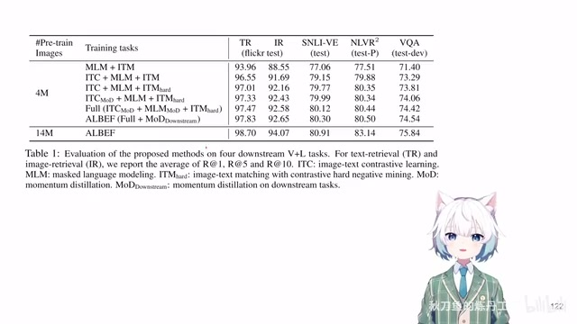
00:12:38–00:13:15 · 画面 041我们就迅速看一眼。它的 ablation你使用不同的 loss甚至在下游任务中。使用这个 momentum distillation它的效果是怎么样子的。那么当然本文包含大量的详细的实验结果。还有很多可视化图片。感兴趣的朋友呢非常推荐你去原文查看。那总的来说呢这篇呢技术上不复杂文章整个的呈现呢。是非常清楚明白的。做的实验呢也很扎实核心的代码也是非常清晰易懂的。
也是后面一系列重要工作的基础虽然网上视频已经很多了啊我还是要借出视频的。这样一个机会让我认真的去把这个文章再捋一遍。好的那么感谢您的收看。请多多指点
00:13:15–00:13:15 · 画面 042
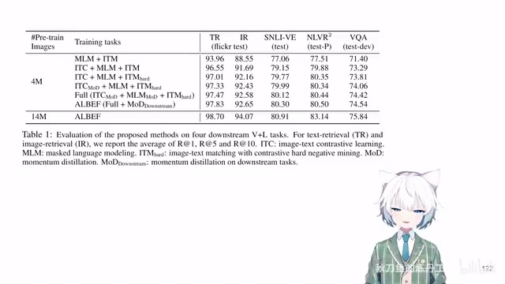
00:13:15–00:13:15 · 画面 042转写与来源说明 · 41 个自动复核提示
保留 334 个原始语音片段，41 个片段触发自动复核提示。提示仅用于定位可能的术语、重复或识别问题，不等于已确认错误。
讲解画面为源视频截图（640×360），不是可编辑 PPT 文件。全片按每秒 2 帧扫描内容变化，逐步展开页保留；连续动画保留代表画面。清晰度受源视频限制。
原视频：paper/合集_2026-10-16_多模态语言模型/[论文速览]Align before Fuse ALBEF ...[2107.07651].mp4
SHA-256：85f624595c5a7665a4cba9a9239ed7a188306be1ee3470a2c0171bff4be052d8
Vision and language representation learning with momentum distillation
它就是学一个大规模的 Vision language representation
它有一个 Cross-attention 的 module
它们做 Cross-attention
先把 Image embedding 和 Text embedding
加了一个 Contrastive Loss
这样一个 vector
另一个 representation 是来自于你的 momentum network
就是 contrastive learning
就是我们使用 crossattention
根据两个 embedding 的 cosine similarity
作为 negative sample
这个 negative sample
他们加权融合一下
这里呢
作者选的 alpha 等于 0.4
这个就是新的
带 momentum distillation 的
这样的一个 contrastive learning 的 loss
那么当然你在做
masked token prediction 的时候
也是可以做蒸馏的
对吧
一样的道理
也是以 momentum 出来的 distribution
跟你 online model 出来的 distribution
它们应该相似
还是 kl divergence
加权融合起来
这是你的这个 mlm
这个 loss
加上这个 momentum distillation
那么到这里呢
其实整个文章的
跟这个 mutual information
这里作者的 formulation
作者选的是 generation
还有这个 visual reasoning
visual grounding
它的 ablation
使用这个 momentum distillation
全文按视频语音与画面制作。原论文可从上方链接下载；完整资料包保留全文、原始逐字稿、字幕和校对记录。